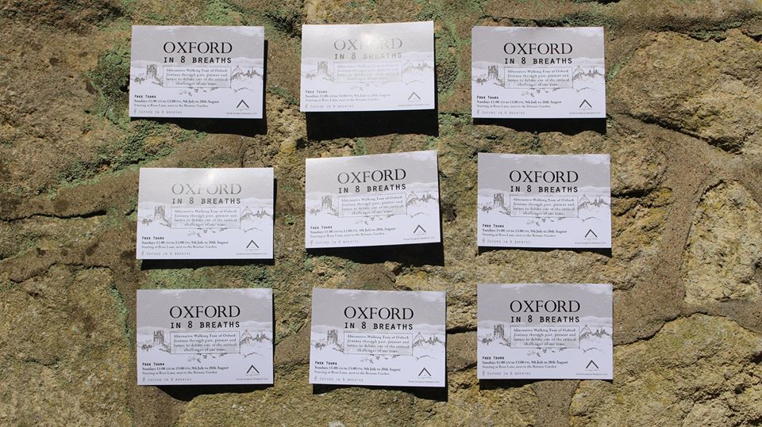

Alternative Walking Tour of Oxford
DIGITAL ARCHIVE
Join us and explore
the city of Oxford and its history
as we
take you on a journey from
past, present, and future to debate
one of the most critical challenges
of our time.
The Air is not just an empty space.
With attendees from the Oxford City Council, the Oxfordshire County Council, Friends of the Earth and the Oxford Pedestrians Association. Asked to create a special tour for Low Carbon West Oxford for their 10 year anniversary celebrations.
This tour 'Oxford in eight breaths' is a departure from traditional walking tours of the city but mostly relies upon the use of creative strategies to explore our current 'Airscape' to connect the walkers with the world around them. The tour culminates in an interactive discussion and focuses on personal action and empowerment.
 2 STOP
3 STOP
4 STOP
5 STOP
6 STOP
7 STOP
8 STOP
In the Social Sculpture field, we work through connective practices to build an active and response-able citizenship. The space offered in this project will enhance the confidence in your own discoveries and findings to develop attentive and responsive criteria
We collected many postcards from Oxford residents voincing their support for more to be done to tackle air pollution in the city and nationwide.